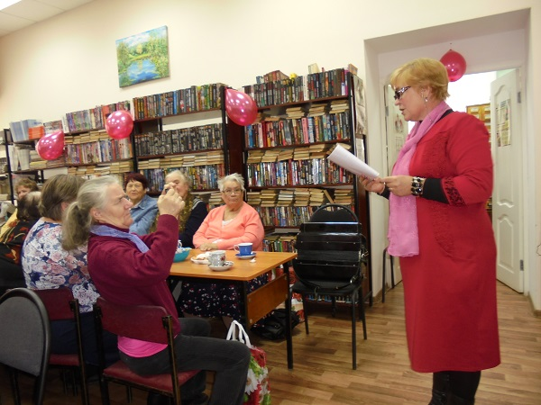
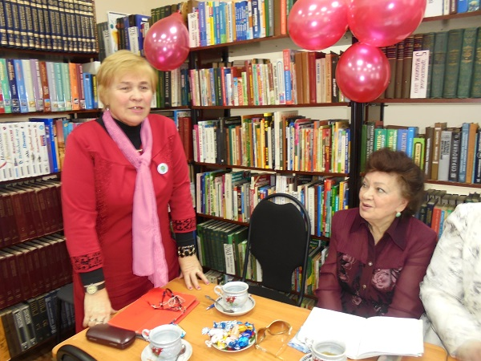

В районной библиотеке Нижнедевицка прошла презентация стихов талантливой поэтессы из села Девица Семилукского района Нины Петровны Часовских – «Я в этот мир пришла». Она является членом Воронежской городской общественной организации «Союз писателей «Воинское содружество».
Стихотворения Нины Петровны посвящены родному краю, близким людям, размышлениям о мироустройстве и предназначении человека на Земле. Её стихи полны оптимизма и человеколюбия. В основе лирики Нины Петровны лежат её личные душевные переживания, впечатления от жизненных событий, встреч.
Презентация прошла в теплой дружеской обстановке.
